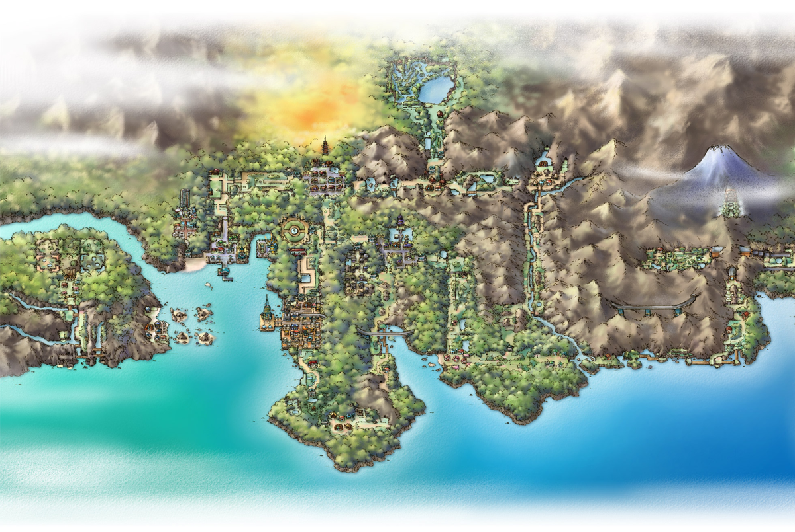
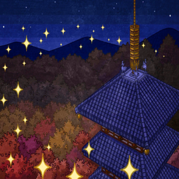
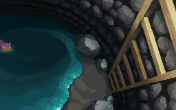

The Johto region is west of Kanto which is located south of sinnoh.
It is based on real life kansai region of Japan. Professor of this region is Professor elm who gives the player the
choice of The three starters in new bark town. it is made up of mostly grasslands but has more water mass than kanto there is also
a huge mountain range that seperates it from kanto. Most Settlementsin this region are named after plants.

Ice path is a four floored cave in northern johto region that connects route 44 with blackthorn city. its is the only place in region
where ice type Pokémon such as swinub, jynx and delibird can be found.


Bell tower is a historical tower located in the east of Ecutreak city. Legend says that ho-Oh the legandary bird
Pokémon used to reside on this tower a long time ago. it is based on a real life temple in kyoto.
Slowpoke well is a well located in mahogany town. it has many wild Pokémon but is most known for slowpokes which the
residents of mahogany town keep as pets. legend says that slowpoke ended a drought 400 years ago here.


Mount silver is the tallest mountain in the ranges that spans north-eastern part of the region it is the most difficult
area of the game and the last place you visit in the whole region.